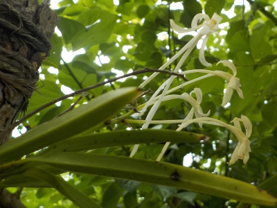

更新日 : 2024/06/26
風蘭を鉢植えにしてしばらく経ちましたが、変わらないです。ちょっとぐらい成長して欲しかった。
このまま置いておいてもずっと変わらないと思うので、環境をちょっと変えることにしました。
鉢を木にぶら下げるだけです。今まで風通しのいい明るい日陰に置き場を作っていましたが、それが要らなくなってスッキリしました。
更新日 : 2024/06/28

100均に風蘭にちょうど良さそうなグッズがありました。
小さい吊り鉢です。

外側の網目があるものを使ってフウランを植えました。内側の鉢はまた別のことに使おうと思ってます。
前回植木鉢を木に吊るしましたが、それよりもとっても軽くいので色んなところにぶら下げれそうです。
更新日 : 2024/06/28

大きい風蘭のかたまりから1つ風蘭を外そうとしたら、全部が岩から外れてしまいました。
どうしよう？なんか考えて対処しないと。
更新日 : 2024/07/02

先日岩から外れたフウランは、松の木の枝にくくりつけて木に吊るすことにしました。
太い枝がぶらぶらしてるのはちょっと異様ですが、これが一番管理が楽な気がします。
全部で6本木にぶら下げました。
更新日 : 2024/08/17

お盆が終わったころに風蘭の花が咲きました。
風蘭は突然変異で新品種ができるなんて聞きますが、これもそうなのかな？
来年も8月に開花するといいな。
更新日 : 2024/08/17

庭石のくぼみに貼り付けていた風蘭ですが、あまり成長していないので移動させることにしました。

7月に木に貼り付けた風蘭の調子がよさそうなので、同じように木にぶら下げます。
たぶん風に当たって成長するでしょう。
更新日 : 2025/01/13

スモモやアンズの木に風蘭を吊るしているんですが、今は葉っぱが全部落ちてしまっているので強い日差しや雨風に当たっています。
条件が悪そうですね。葉っぱの色が少し黄色いのか気になります。
場所を変えた方がいいかもしれない。だけど、野生の風蘭もきっと同じような環境だと思うからこのままでいいんじゃないかな。
とりあえずこのまま置いておこう。
更新日 : 2025/07/19

風蘭が咲いていますが、特になんとも思わないです。
木にぶらさげることで水やり等のお世話を一切しなくなったので、愛着がなくなりました。
手間暇かけるから楽しんでしょうね。
更新日 : 2026/07/05

フリーメンテで放置しててもつまらないですね。
木にぶら下げてると花が咲いてても目立たないし。
なんか新しい置き方とか考えようかな。
風蘭はナチュラルに置いててもあんまり楽しくないかな。
【おいしいものを食べよう。】【たくさん寝よう。】
【ソロ活をしよう!】【季節感のあることをしよう。】【動画視聴はほどほどに。】【当サイトの全てのコンテンツは無断転載禁止です。】